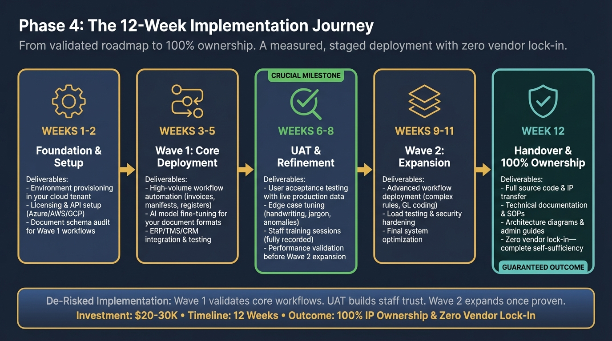

Phase 4 of The Protocol™
Deployment onto the secure architecture validated in Phase 2. No third-party portals. No per-document fees. A targeted 8-12 week implementation from validated roadmap to 100% IP ownership.
We de-risk implementation by deploying in two stages. Wave 1 establishes your core "Technical Production Line." Wave 2 expands capabilities once staff trust and accuracy are validated through UAT & Refinement.
Wave 1 focuses on high-volume, low-complexity workflows (invoices, manifests, registers). Once staff see 95%+ accuracy and trust the system through UAT validation, Wave 2 adds advanced workflows with complex business rules (GL coding, trust reconciliation, customs verification). This staged approach prevents "big bang" failures and builds organizational confidence before expanding automation scope.

Traditional automation vendors charge $150k-$300k for enterprise implementations with ongoing per-document licensing fees. The Curam-Ai Protocol™ is different:
By the time you reach Phase 4, we've already validated technical feasibility (Phase 1) and architected the deployment (Phase 2). This eliminates the "discovery costs" that inflate traditional projects.
We deploy to YOUR infrastructure, not ours. No per-document processing fees, no subscription markup, no vendor hosting costs passed to you.
You're not renting software—you're buying an asset. The one-time Wave 1 fee gives you permanent ownership of source code worth $180k-$700k+ annually.
This investment covers your highest-ROI workflows (invoices, manifests, registers). Wave 2 expansion is quoted separately based on complexity validated in Phase 2.
Bottom Line: Phase 4's favorable economics are possible because Phases 1-3 eliminate the risk, scope uncertainty, and infrastructure unknowns that make traditional implementations expensive.
Complete ownership transfer. No vendor lock-in. Your team inherits a production-grade asset.
A measured journey from environment setup to full IP handover. No rushed deployments.
Timeline Contingencies: The 8-12 week estimate is contingent on Phase 2 scope adherence and UAT validation. Extensions for client-side delays or scope changes outside Phase 2 roadmap are quoted separately. UAT validation may extend timeline by 1-2 weeks if edge cases require additional AI retraining (included at no extra cost provided scope matches Phase 2 roadmap).
This is the de-risking checkpoint. Wave 2 only proceeds once UAT validates Wave 1 accuracy and staff trust. If issues arise, we extend refinement (typically 1-2 weeks at no extra cost) before expanding scope.
Wave 2 Pricing: Quoted separately based on Phase 2 roadmap complexity. Typical range: $15-25k depending on advanced workflow requirements.
Weeks 6-8 UAT is designed to surface edge cases before Wave 2 expansion. This is the intentional checkpoint that prevents "big bang" failures.
We extend the refinement phase (typically 1-2 additional weeks at no extra cost) to retrain the AI on your specific document anomalies. Common issues include:
Wave 2 only proceeds once UAT validates Wave 1 performance at 95%+ accuracy. This staged validation is how we prevent the "rushed deployment → failure → costly rework" cycle common in automation projects.
Phase 4 is tailored to your sector's specific "Capacity Leak." We prioritize high-volume automation in Wave 1 and complex logic refinement in Wave 2.
Wave 1: High-volume invoice extraction & automated Xero/MYOB/ERP matching to eliminate 50% of admin data entry.
Wave 2: Complex trust account reconciliation & automated GL coding rules to support higher client volumes.
UAT Validation (Weeks 6-8): Staff process 50+ live invoices through Wave 1 to validate accuracy and exception handling before Wave 2 expansion.
Outcome: Reclaiming ~2,000 annual admin hours
Wave 1: Drawing register & transmittal automation, removing the 20% manual documentation burden from junior staff.
Wave 2: AI-powered site report & RFI extraction, accelerating the "Technical Production Line" for senior managers.
UAT Validation (Weeks 6-8): Engineers test Wave 1 with live transmittals and schedules, tuning AI for handwritten notes and strikethrough text.
Outcome: Unlocking ~2,000 annual billable hours
Wave 1: Manifest & waybill entry (Direct TMS integration) to handle 1,000+ documents daily with sub-10s processing.
Wave 2: Automated customs documentation & hazardous goods verification for guaranteed compliance safety.
UAT Validation (Weeks 6-8): Operations team validates Wave 1 manifest processing with live hub data, ensuring carrier-specific format handling.
Outcome: 40% reduction in operational overhead
Wave 1: Contract metadata extraction & matter file automation to recover 8-12 billable hours per lawyer per week.
Wave 2: Trust account reconciliation & automated legal precedent tagging for compliance-heavy practices.
UAT Validation (Weeks 6-8): Partners test Wave 1 on live matter files, validating document classification and metadata accuracy.
Outcome: ~1,800 annual billable hours recovered
Wave 1: Claims form processing & policy document extraction to handle 500+ submissions daily with automated risk flagging.
Wave 2: Automated risk assessment scoring & compliance documentation for PI/PL underwriting workflows.
UAT Validation (Weeks 6-8): Underwriters validate Wave 1 claims processing accuracy, testing edge cases like pre-existing condition detection.
Outcome: 35% faster claims processing turnaround
Phase 4 turns your validated Phase 2 roadmap into production reality. Two-wave deployment, UAT validation, and 100% IP ownership—no vendor lock-in, no ongoing fees.
Phase 4 Wave 1 Implementation: $20-30K • 8-12 Weeks • 100% IP Ownership
Wave 2 expansion quoted separately based on Phase 2 roadmap complexity (typically $15-25K)